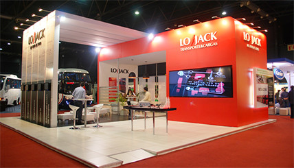

Crecen empleos y venta de autos
(08-Nov-2012).- Sara Cantera y Benito Jiménez- Reforma
A menos de un mes de concluir el Gobierno de Felipe Calderón, hay buenas noticias: la producción y venta de autos al extranjero y la creación de empleos lograron niveles históricos.
En los 10 primeros meses del año, México produjo 2.4 millones de vehículos y exportó 1.9 millones de unidades, mientras que en el mismo periodo se crearon 865 mil nuevos empleos formales, la cifra más alta de la que se tenga registro para un año.
08-Nov-2012